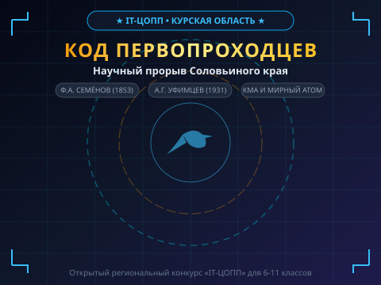
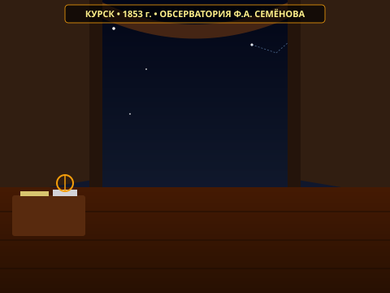

АРХИВ ПЕРВОПРОХОДЦЕВ: ИНЖЕНЕРНАЯ ЛЕТОПИСЬ
Интерактивный Scratch 3.0 симулятор истории науки и техники Соловьиного Края (Liquid Glass)
kursk_heroes.sb3 (331 КБ) • 24 спрайта, 464 блока, 46 векторных ассетов Liquid Glass.Реальное интерактивное управление (стрелки клавиатуры, физика баланса ветра, гео-компас). Валидация
scratch-parser: 0 ошибок!
Локации и Интерактивный Геймплей

Сюжет: Инженер-стажер ЦОПП восстанавливает архивные данные курских первопроходцев при поддержке зонда наведения «Соловей-46».
Интерфейс: Liquid Glass кнопки меню, информационный HUD текущей миссии, телеметрические координаты Курска.

Персоналия: Фёдор Алексеевич Семёнов — курский купец-астроном, лауреат Золотой Демидовской премии РАН 1858 г. за расчет затмений до 2001 года.
Геймплей: Игрок стрелками клавиатуры наводит визир на затмение. При точном наведении прицел загорается зеленым "100% ФОКУС"! Клик по кнопке «ЗАФИКСИРОВАТЬ ФОКУС» фиксирует координаты.

Персоналия: Анатолий Георгиевич Уфимцев — внук Семёнова, создатель первой в мире ветроэлектростанции с 3.5-тонным вакуумным маховиком-аккумулятором на ул. Семёновской.
Геймплей: Симулятор динамики ветра: при шторме (>60 км/ч) игрок жмет [ТОРМОЗ РОТОРА] для защиты от перегрузки; в штиль (<25 км/ч) жмет [ВАКУУМНЫЙ МАХОВИК] для питания фонарей Курска до 100%!

Персоналия: Академик Пётр Лазарев — первооткрыватель 30 млрд тонн магнетита КМА; энергетика Курской АЭС и АЭС-2 (реакторы ВВЭР-ТОИ).
Геймплей: Игрок стрелками перемещает измерительный зонд по карьеру. Стрелка компаса указывает на руду, а звуковой бипер ускоряется. В эпицентре активируется [ИЗВЛЕЧЬ КЕРН КМА]!

Сюжет: Итоговая инженерная аттестация из 5 вопросов по фактам экспедиции (Liquid Glass Bento-карточки [A], [B], [C]).
Финал: Присвоение звания «Академик Соловьиного Края», вручение Золотой Демидовской медали РАН и торжественные победные фанфары!
Критерии оценивания конкурса (45 / 45 баллов)
kursk_heroes.sb3.